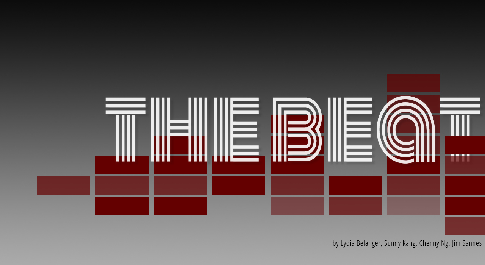
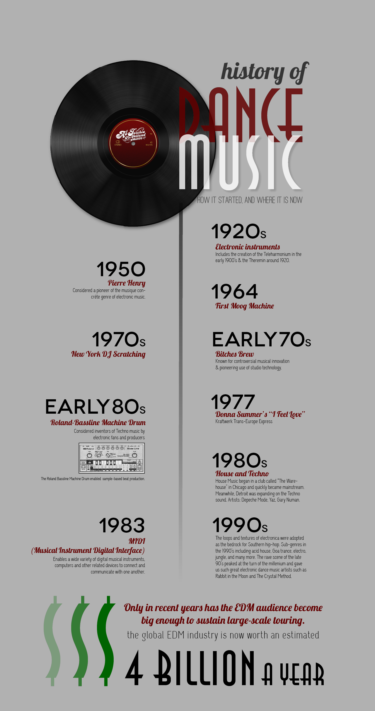

Electronic dance music is a $4 billion per year industry that can trace its roots back to genres ranging from disco to hip-hop. Learn more about how synthesizing sounds electronically has evolved into an international movement - and why it's not completely isolated from instrumental music.
Electronic dance music isn't your granddaddy's swing jam. The genre's heavy bass and layered rhythms have found their way into commercials, top-40 charts and even modern dance culture.
"At this day and age, I'd consider most music to be electronic." - Drishay Menon, Chicago DJ
"At this day and age, I'd consider most music to be electronic."says Drishay Menon, a Chicago deejay who runs a music blog, The Music Binge.
Menon says electronic music can be anything created electronically, but that people play one specific sound in their mind when they hear the term, despite the genre's broad range. From the extreme wonkiness of dupstep to the more subdued ambience of lounge or downtempo, a single style doesn't capture the music - or its history.
The electronic dance music (EDM) movement had a late start in the United States compared with Europe, where EDM has been popular since disco's decline in the early 80s. Today, its popularity in the States has been growing: In 2011, electronic music festivals in Las Vegas and Miami drew a combined 380,000 fans, and music- and video-sharing sites have made reaching listeners easy. The YouTube channel for Ultra Records the biggest electronic music label in the U.S., has collected more than 1.3 million subscribers and nearly 2.2 billion views.
"In 1999, there was a lot of stuff happening, but it kind of died down," says Tim Nicholas, a deejay for "Streetbeat," a two-hour electronic music segment on Evanston-based radio station WNUR. "The whole idea of electronic music has really taken off recently. I would say the hype started building around '07, '08, '09."
Nemiah Mitchell, the creator of Chicago house music, talks about the origins of the genre and how it got its name.
EDM might be reaching a fever pitch now, but it's roots run deep, stretching back to the 1960s and pulling inspiration from funk, disco, techno, hip-hop and Chicago house music. Researchers have begun dissecting contemporary EDM to trace this lineage, according to a report published in 2012 by Dr. Nick Collins, a lecturer at the University of Sussex.Collins' reportdetails the evolution of EDM, starting as early as the 1960s.

Electronic music is just what it sounds like: it's music generated by electricity, as opposed to traditional musical instruments. Or as Nicholas describes it, "[it's] electricity converted into acoustical waves," possible with a computer, synthesizer or other machines to create sound.
"Nowadays anybody can pick up a computer, download a piece of software," Menon says, noting that in the past, EDM creation required expensive software, inaccessible to the general public at a cost upwards of $1,000. "Remix culture has become much more prevalent, because people now have the ability to take samples, natural sounding sounds, capture them, and reproduce and manipulate them digitally."
When Nicholas discovered FruityLoops, a type of sound editing software that debuted in 1998, he was hooked. "I opened that program, and it clicked. And then every night I was up eight hours, until four in the morning."
Today, famous artists such Cedrick Gervais - or even Skrillex, the first Grammy-nominated electronic artist- have made chart-topping hits on a laptop. Within the expansive EDM culture, criticism of certain artists depends on their category. Mashup artists, producers and deejays each have their own criteria in terms of musical quality. Menon distinguishes a mashup artist as someone who combines songs artfully, a producer as a composer of new sounds or chords, and a deejay as someone who has the ability to play a series of songs in a cohesive way while commanding a crowd of listeners.
"[To categorize them,] you actually try to look and understand how they composed something," Menon says. "Have they just sampled something, put it on repeat, tweaked it here and there? Have they actually tried to be musical with their production?"
"I opened that program, and it clicked. And then every night I was up eight hours, until four in the morning." - Tim Nicholas, Streetbeat DJ
While electronic artists do not physically strike drums to create the precisely syncopated beats that prevail through each track, music theory is not lost in the realm of EDM. In fact, in the age of the movement internationally, there has been a recent shift back to analog inputs.
"They've started to say, "everything is too electronic." They're just taking an 808, repeating some sort of drum pattern, throwing a chord progression or a melody on top of it, and calling that music. And in most cases," Menon laughs, "that's enough. That's all you really need."
Take for example Daft Punk's "Get Lucky," the lead single on the duo's new album, Random Access Memories. The entire album has one sample, and "Get Lucky" has no electronic sounds.
"They've manipulated the words, but it's all been analog," Menon says. He recently tried to incorporate "Get Lucky" into one of his sets, but it wouldn't work. "I tried to beat-grit it. What beat-gritting is- you try and line up where every single beat hits, and I couldn't do it because it was natural. A natural drummer doesn't hit each beat perfectly. That's the movement people are now going towards."
Nicholas, who earned engineering degree before delving into the world of deejaying, says that electronic music composition is definitely a science, but also explains that elements of electricity are used beyond the genres within EDM.
"There is a vibe of electronic music in a lot of types of music," Nicholas says. "Even rock 'n' roll, people don't associate with electronic music. Other genres will use electronic amplifiers and guitars."
He attributes his engineering background to his ability to bring clarity to mixing.
"I can manage the sound properly," Nicholas says of his mastery of the equipment around him in the WNUR studio. "Often people push their equipment too hard. They push the limits too hard and it ends up lowering the quality of the music overall."
He points to red and green lights that are flashing on one of the machines in the "Streetbeat" studio, creating visualizations of sound quality. "You don't want it to go red too much," he says. "It's not really getting any louder, it's just pushing the music harder."
Try Mixing For Yourself!
Seaquence is an experiment in musical composition. Play with the creatures by clicking on the squares and in the circle to add tones. This will create your own electronic music!
The appeal of the EDMs layered sounds and persistent beats have certainly captured popular interest, but its abstract, dynamic nature makes the genre hard to study. While few have devoted their careers to this field, Northwestern Associate Professor of Music Studies Mark J. Butler specializes in the "unlocking the groove"-the title of one of his books on the subject.
"The "beat" is a technical term in music theory," Butler says. "In EDM, it is a materially present phenomenon, and to a certain extent, it represents the music."
Butler set out to study EDM with a few ideas in mind and the goal of not limiting himself by oversimplifying or overcomplicating the music. He chose to pursue his research ethnographically-while much of his exploration was done on the computer with a pair of headphones, he has also attended festivals and conducted field research to study the musical design. He emphasizes that EDM is less about structure and more about experience.
"At first, people were like, 'What are you studying? It's just 'unch-unch-unch-unch,'" Butler says. "But I wanted to know, 'What is it in this music that's rhythmically and metrically interesting?'"
A key feature of many tracks is the moment when the beat "drops," and audiences pause, waiting for the beat to return so they can resume dancing. In music theory, the beat is the universal term for a time marker that divides a piece of music. Similar to the way in which a musician keeps time, tapping his or her foot even during a rest period within a piece of music, an awareness of the beat persists even in a moment of silence.
"The beat is not an actual sound," Butler says, "but rather a feeling that you have at certain points."
The beat's internal thumping combined with EDM's synthetic nature creates tension in the rhythm and meter. Techno, which is considered a sub-genre of EDM, is especially known for its layered sounds, each with its own repetitive features. Stacking multiple layers of sound on top of one another has various effects. On one hand, listeners will pay attention to each layer as it is introduced into the composition, engaging with it and processing it individually. The sum of these-with their own time signatures, tempos and miscellaneous interruptions-results in what Butler calls "metrical dissonance."
"This music facilitates rich experiences of time." -Mark J. Butler, Ph.D., Associate Professor of Music Studies, Northwestern University Bienen School of Music
"There are layers in the music that don't align in certain ways. ... You hear a little cymbal sound that starts out, and it's just a steady beat. ... When your brain starts synchronizing and anticipating a regular pattern, you take that as the beat, but then you realize that what you heard as the beat before was actually the offbeat."
Listeners are able to adapt to this sort of chaotic collection of sounds, interacting with each new sound. The experience can be participatory, through dancing or other types of bodily expression.
"It doesn't usually lead to total derailment. It's a pleasant amount of confusion," Butler says. And when you introduce this type of music to a festival crowd or packed club, the unique nature of the genre reveals itself even more, through individual expression and a collective energy the crowd generates.
Rather than the typical concert setting, where a musician or group plays a set of disparate songs, the length of a deejay set in a club setting could last hours, with continuous dancing and opportunities for the music to develop and grow. Butler says the energy of the crowd makes the experience a uniquely dynamic one.
"There's sort of a merger of events: time and space," Butler says. "A good deejay set will use tracks that the audience will know, but very selectively, introducing climatic moment when they want to bring the audience together."
Butler also points out the infinite possibilities for remixes and mashups that exist with EDM. The genre has obliterated the concept that there can be only one version of any given song, and records are not ends into themselves, but they're meant to be combined and juxtaposed.
"Songs in this genre should be understood as networks," Butler says. "They're related but different versions of one thing."
The true experience of EDM is a combination of sound, sensations, lights, and people. The length of a deejay's set allows for the creation of a surreal, cohesive experience.
For most students at Northwestern, electronic music is simply a kind of sound that has been turning up increasingly often at dance parties. But for some, the evolving subculture means much more. Northwestern students and electronic dance music enthusiasts Jenna Stoehr and Katie Chilton described the music as a method of escape and a stress-reliever, with Chilton saying "It's very much a place where I can go and be crazy. It's kind of a reset button on life." They also both stressed that the culture was heavily built on the live experience of EDM.
Concerts and festivals sometimes foster self-expression and community unity, Chilton says, explaining that the large electronic music shows she's attended have attracted a stunningly diverse group of people from all over the world.
"Music really is a universal language... You feel like you're a part of something bigger. It brings people together more than any other genre." For example, Ultra Music Festival, which a group of about 100 Northwestern students attended together this year in Miami, Florida, sold more than 150,000 tickets in 2012.
"You can be a completely different person and assume this different identity for a few hours in this totally new world. I can dance around in a sports bra and panda hat with glowsticks and no one knows that I'm a biochemistry major."
While not all fans of all sub-genres of EDM may identity with the same social implications, both Stoehr and Chilton describe meeting groups of strangers and experiencing bonding with them "without ever knowing who they are in the real world." Certain traditions have formed around these instant friendships: Festival attendees will often wear rows of glowstick bracelets on their arms, and do a specific handshake that involves trading bracelets when they want to make friends with a stranger.
But EDM is not completely about new people. Stoehr says some EDM enthusiasts create informal but stable "rave families" with whom they actively seek out shows to attend together. She mentions "PLUR," an acronym for "peace, love, unity, respect" among ravers. Longer lists with words like "harmony" and "responsibility" have also developed - variations of this mantra have become the "raver's manifesto" across audiences.
Another type of collective experience is drug use. While drugs don't define the genre or its fans, stimulants like MDMA (or "Molly," which is a more purified form of ecstasy) can affect a listener's experience, as well as the outcome of a composition if taken by the artist.
"Molly is the marijuana of our generation," Menon says. "Now, music has been created to satisfy that, to play to that. In clubs, you see very hard-hitting sets. People are no longer playing melodic sets. It's just beat after beat after beat. Chorus after chorus. It's four to the floor, nonstop."
But it doesn't take substances to have an out-of-body experience with EDM. Nicholas says he feels a spiritual connection to his deejaying for Streetbeat.
"Your third eye is wide open when you're really in the moment," Nicholas says, talking over rippling rhythms and pulsating beats. "It feels like I'm watching myself, rather than doing it."
EDM has a wide scope, with infinite possibilities for combining sounds, introducing new genres and individualized ways of consuming and experiencing the music, even in a group setting. Each nuance of the sound can shape the way listeners behave, while listeners and their interactions - in terms of composition or expression - shape the music, seemingly transforming it into a live entity.
"What's interesting is that it's a double-edged sword, a two-sided coin," Menon says. "Electronic music is now affecting society, and society is affecting electronic music."
It's not notes on a music staff or songs confined to a four-minute radio cut: EDM has no limitations beyond the imagination. With the help of a computer, light show or even an ecstasy pill, EDM is able to transcend time. Manipulations of typical rhythmic conventions, samples from eras past and endless possibilities for further mixing in the future mean that EDM is here to stay- even though it's hard to pin down.